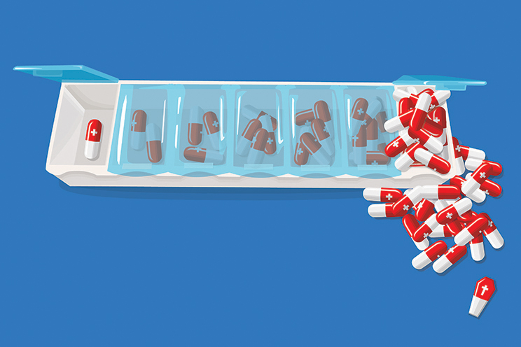

Opposites Poster
A visual juxtaposition of the words "help" and "harm." The project involved designing a poster demonstrating these opposites only using imagery. I chose to expose the potentially harmful effects of drugs, especially in regards to overdosing and drug-related suicide. I illustrated the progression from a helpful medicine to harmful or even fatal drug.
A project for Graphic Design I at MassArt.